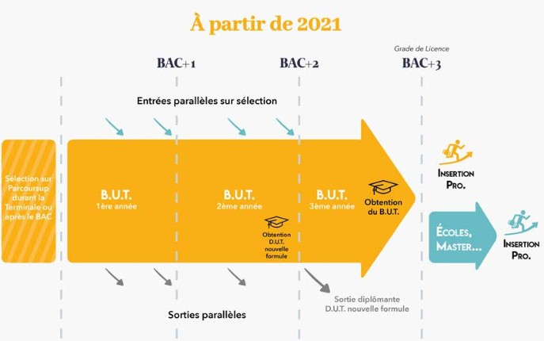

BUT
A partir de la rentrée 2021, les IUT devront proposer un parcours de formation en 3 ans, conférant aux étudiants 180 crédits ECTS. Mais attention la création de ce nouveau diplôme ne supprime pas le DUT. Les étudiants de ce nouveau parcours de licence professionnelle pourront également être sanctionnés au niveau intermédiaire de 120 crédits (niveau bac + 2) avec la délivrance du DUT. Ce nouveau parcours en 3 ans permet d'obtenir le grade de licence avec la possibilité de se réorienter dès la 2e année grâce au jeu des passerelles prévues dans l'arrêté qui rappelle que "l'établissement assure la flexibilité des parcours et la réorientation des étudiants par l'organisation de passerelles entre formations". En première année de BUT, au moins 50% de bacheliers technologiques devraient être accueillis. Les spécialités existantes déjà dans le cadre du DUT devraient être conservées. L'arrêté prévoit le suivi de 2 000 heures d'enseignements encadrés pour les spécialités du secteur "production" et 1 800 heures pour les spécialités du secteur d'activités "services". Une place serait faite au travail en mode projet et les étudiants suivraient 600 heures de projet tutoré ainsi que 22 à 26 semaines de stage. Le bachelor universitaire de technologie s'appuiera, pour deux tiers du volume d'heures, sur un programme national et pour un tiers sur des adaptations locales permettant ainsi de prendre en compte l'environnement local et la réalité du monde professionnel.
